Every screen has one idea and one main button. Screens from the running app on a local fork of Ethereum mainnet, at phone width. Some are captured at a smaller scale than others.
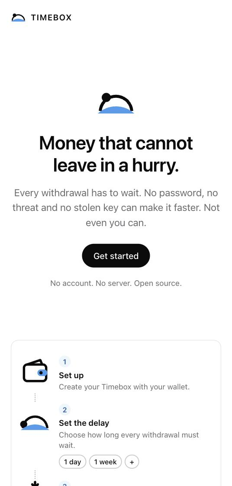
WelcomeOne sentence, one button.
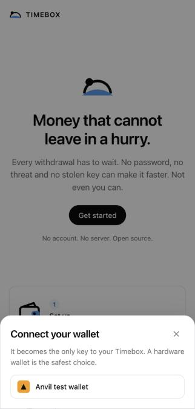
ConnectA sheet slides up. It says what the wallet will be: the only key.
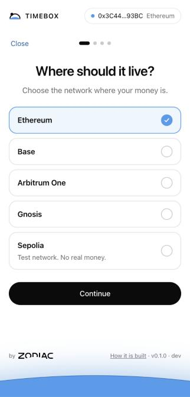
Create: networkOne question per screen. Test networks show only in the dev build.
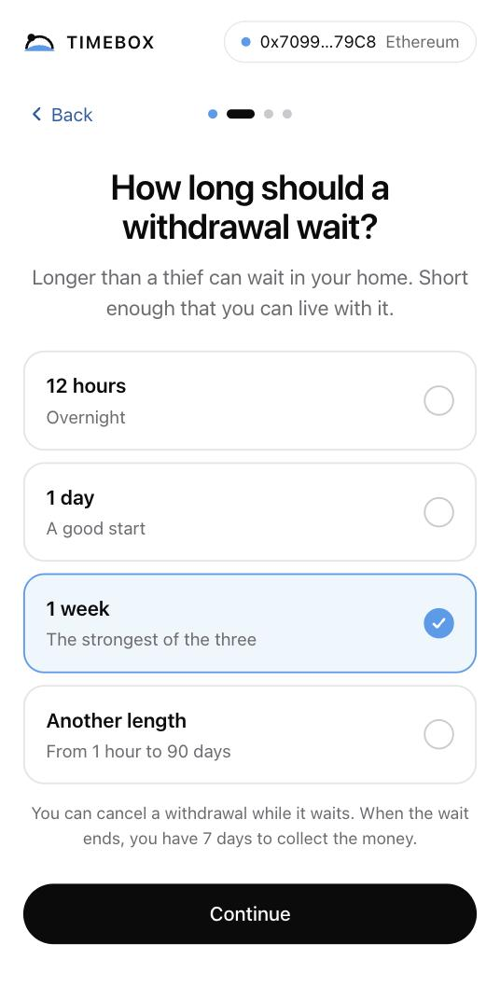
Create: delayThree choices and "another length".
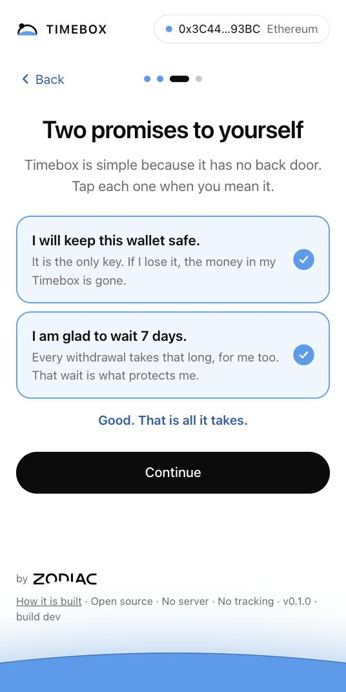
Create: two promisesTap each card. Both ticked gives "Good. That is all it takes."
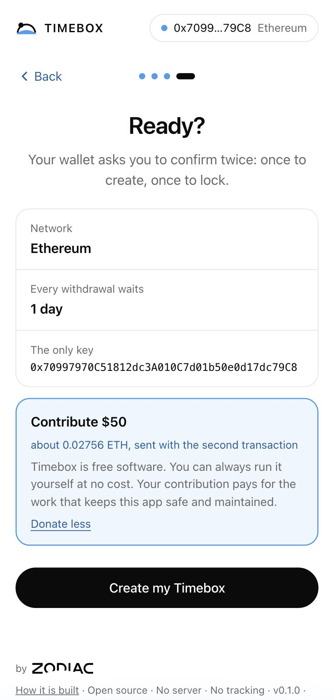
Create: readyA short summary and the contribution.
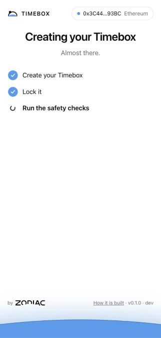
Create: workingA checklist that ticks itself off.
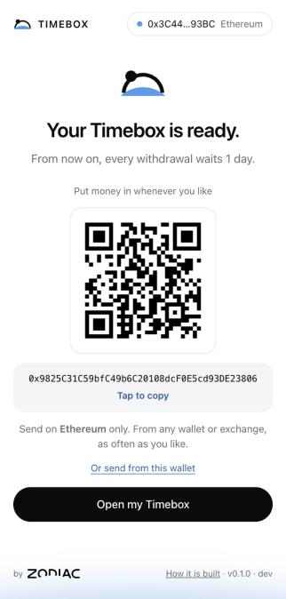
Create: doneThe mark, the promise, and the address to send money to.
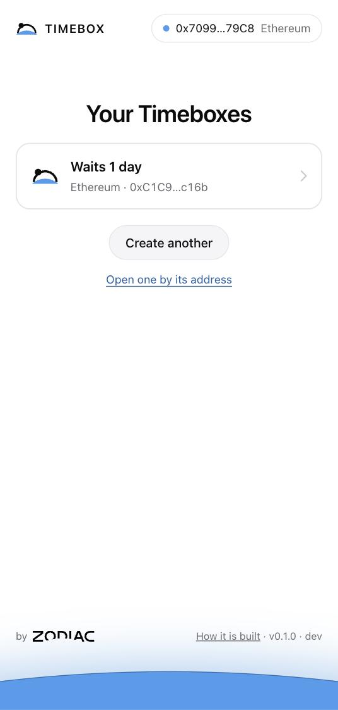
HomeAfter the first Timebox, the list is the start screen.
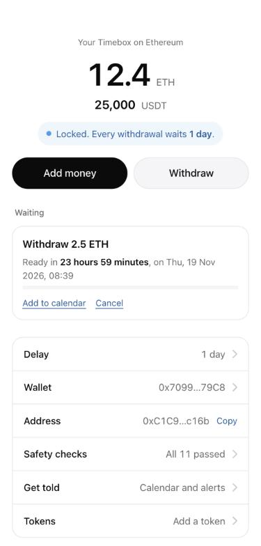
A TimeboxWhat is inside, one status line, two buttons, what is waiting, and a short list.
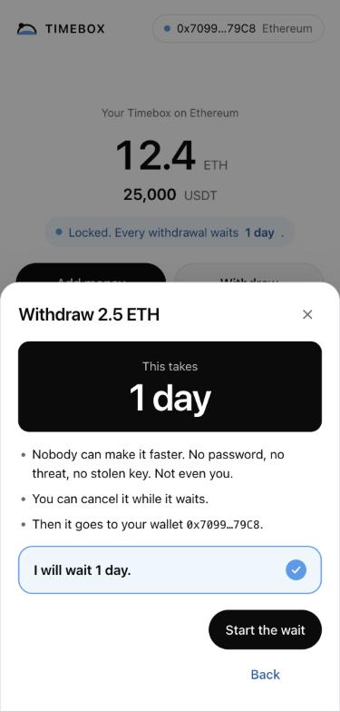
WithdrawThe strong message, then one promise to tick.
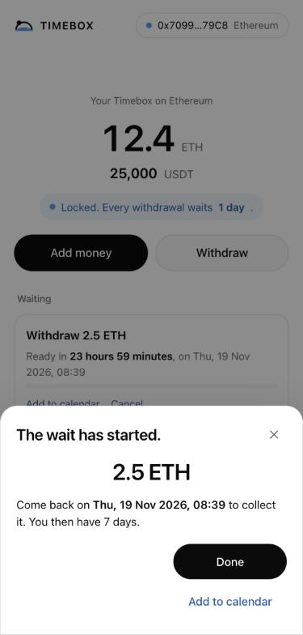
The wait has startedWhen to come back, and a calendar reminder.
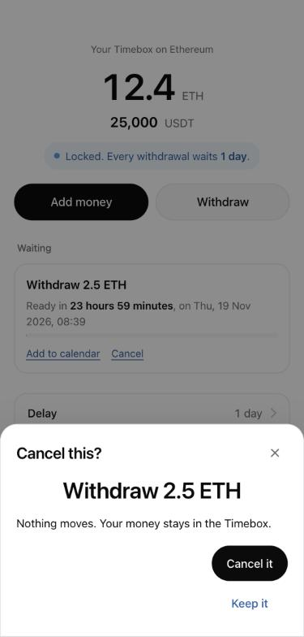
CancelOne sentence: nothing moves.
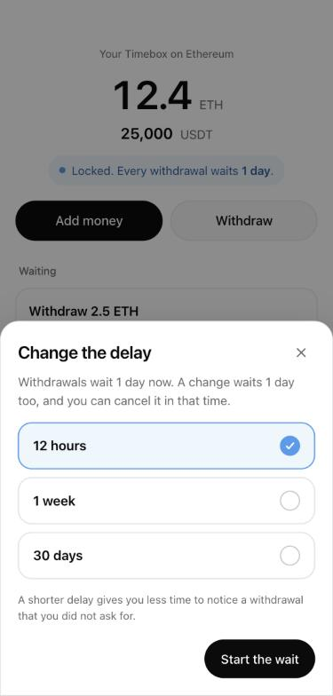
Change the delayOpened from the list.
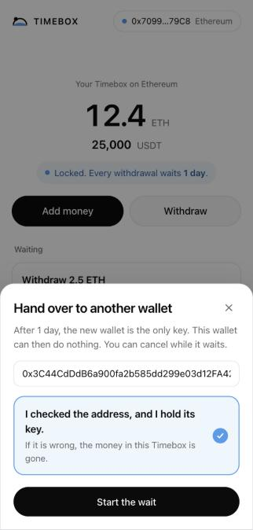
Hand over to another walletOne field and one promise.
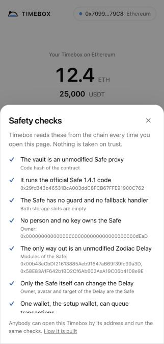
Safety checksOut of the way until you want to see them.
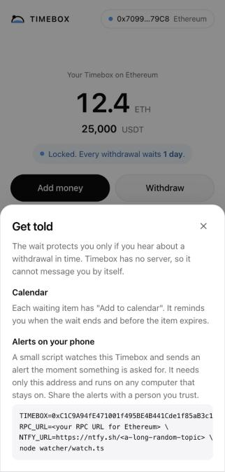
Get toldCalendar and alerts.
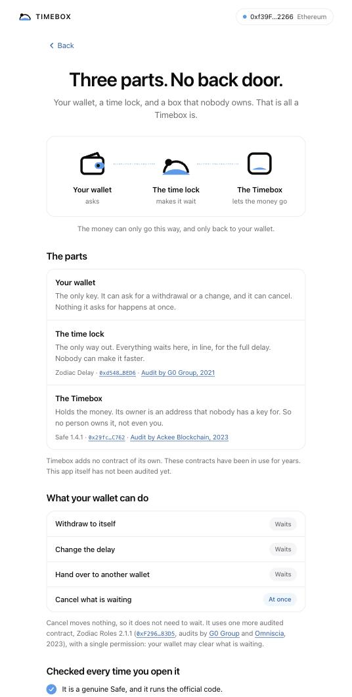
How it is builtThree parts, what the wallet can do. The wallet sentence and the box glyph were refined after this capture.
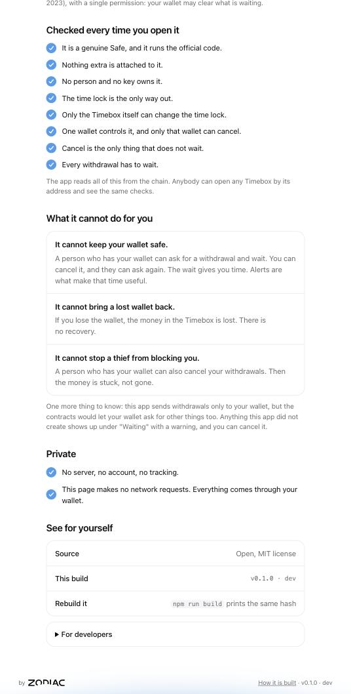
How it is built, continuedThe checks, the limits, and how to verify.